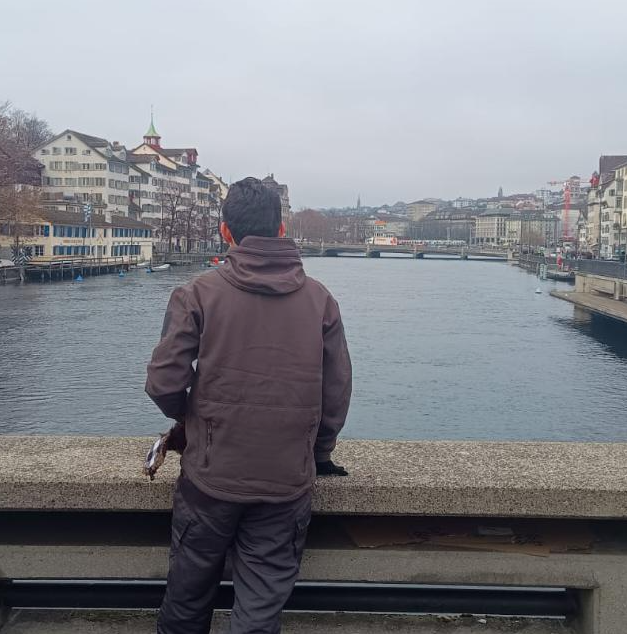

💻
Tecnologia
Descobrir ferramentas novas e entender como os sites e apps são feitos.
Meu nome é Lucas Danna Persiani. Sou curioso, gosto de entender como as coisas funcionam e de criar coisas novas. Descobri na tecnologia uma forma de juntar criatividade e lógica.

Descobrir ferramentas novas e entender como os sites e apps são feitos.
Jogar com os amigos na Steam e reparar nos detalhes de como cada jogo foi criado.
Gosto de desafios e competir com os outros para me tornar melhor.
Praticar atividades físicas para manter a energia e a cabeça leve.
"Cada linha de código é um passo a mais em direção a quem eu quero ser." — Lucas Danna Persiani